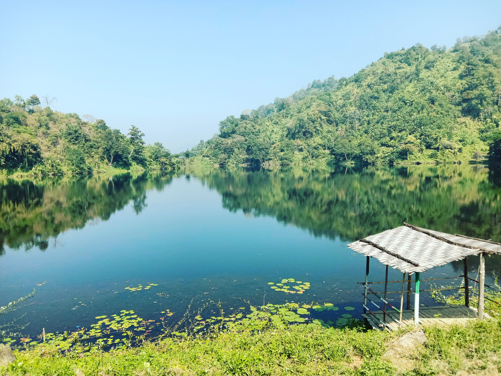

Bogakain Lake, also called Baga Lake or Boga Lake, is a lake located in Ruma Upazila in the hill district Bandarban, Bangladesh. It is a natural sweet and deep water lake. Its height from sea level is nearly 1,246 feet. Geologists believe that it was created by collection of rain water in summer
